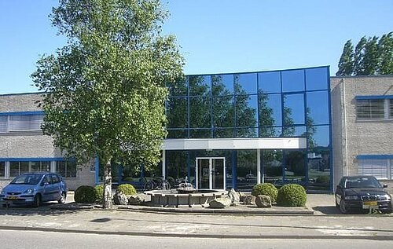
Ons gebouw heet De Uitkijk. Van oorsprong is het een fabriekshal, door de gemeentebezoekers omgebouwd tot een multifunctioneel en praktisch gebouw. De verschillende ruimtes zijn ook te huur.
Een korte rondleiding.
Receptie
Wanneer u door de dubbele deur binnenstapt, vindt u links in de hal de Balie. Doordeweeks is er (met name ’s ochtends) meestal wel iemand die u hier begroeten kan.
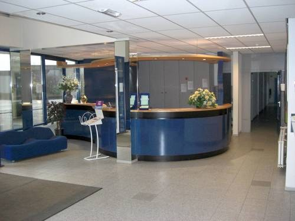
Atrium
De grote deuren die u rechts naast de trap ziet, leiden naar het Atrium. Hier drinken we na de samenkomst koffie en thee. Het is een flinke ruimte, maar hij staat zo rond 11.45 uur op zondagmorgen toch behoorlijk vol.
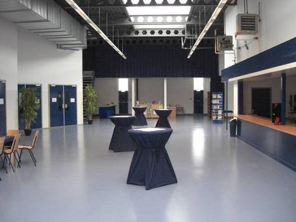
Samenkomstzaal
Het hart van De Uitkijk wordt gevormd door de grote zaal waar onze samenkomsten worden gehouden. Deze is bereikbaar door de deuren links in het Atrium. De zaal heeft ruimte voor bijna duizend bezoekers. Er is een ringleiding aanwezig voor slechthorenden. Links en rechts van het podium worden de liederen en de Power Point presentaties van de overdenkingen met beamers geprojecteerd. Er is een ringleiding aanwezig voor slechthorenden.
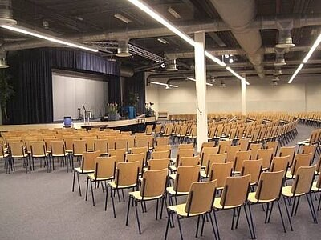
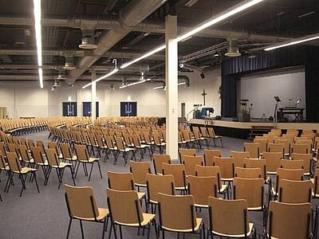
Kids Club
De trap in de hal bij de receptie leidt naar de eerste verdieping. Hier zijn de ruimtes voor de Kids Club. Aan beide einden van de gang bevindt zich een grote ruimte, waar aan de ene kant alle kinderen van de onderbouw samenkomen en aan de andere kant alle kinderen van de bovenbouw.
In de verschillende kleinere ruimtes staan geschikte tafels en banken waar kleinere groepen kinderen samenkomen voor de verwerking van het thema en om wat te drinken.
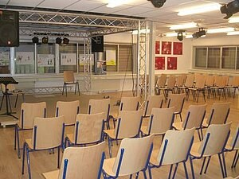
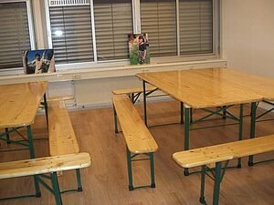
Raadskamer
Tussen de Kids Club-ruimtes in, op de eerste verdieping aan de kop van de centrale trap, bevinden zich verschillende kantoren en de kamer waar de raad vergadert.
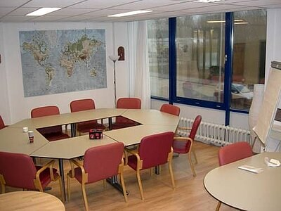
Crèche en Peuters
Terug op de begane grond leidt de glazen deur rechts in de hal naar diverse crècheruimtes en een ruimte voor de peutergroep.
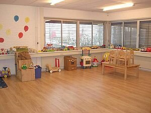
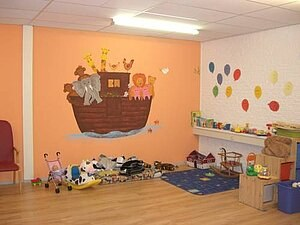
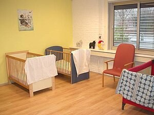
Kantine
De deur links in de hal geeft toegang tot de kantine. Deze beschikt over een eigen keuken en wordt intensief gebruikt door kleine groepen, bijvoorbeeld voor bidstonden en cursussen. Er tegenover bevinden zich de toiletten.
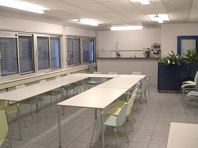
Soos
Helemaal aan het einde van deze gang bevindt zich dan ten slotte de Soos. Het eigen honk van onze Jeugd: BeFree (12-15jr), BeOne (16-23jr) en BeAlive (23-28jr). Geheel naar eigen smaak ingericht, een geliefde ontmoetingsplaats, waar de jongeren hun eigen evenementen organiseren.
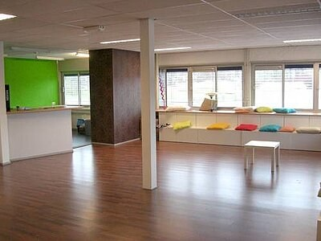